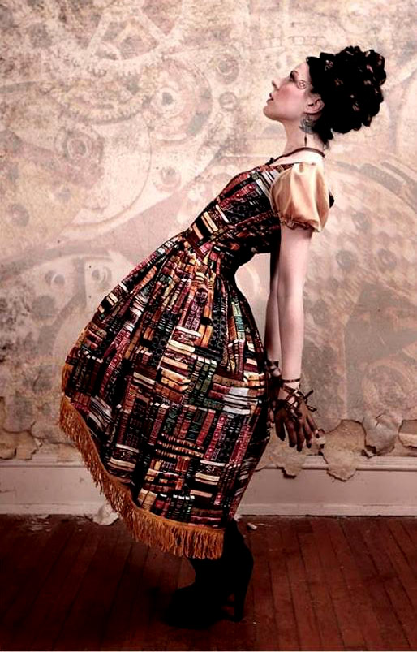
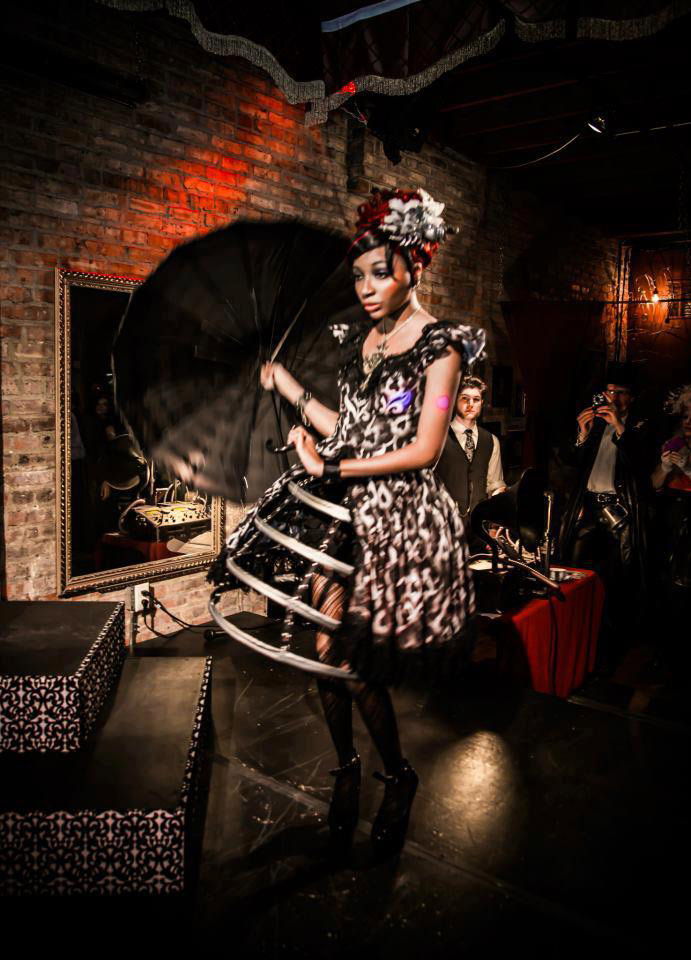

Silversärk Clothier
Self-taught steampunk seamstress, Stephanie Schultz, doesn’t design regular clothes. She designs a lifestyle inspired by an era of embellishment, luxury, and storytelling. Her line Silversärk is modern day Victorian garb with a Japanese twist fit for a Lord or Lady. Her elegant gothic designs are intricate, filled with lace, layers, and a certain level of intriguing darkness that can sort of envelop a runway.
Schultz wanted to introduce her avant garde style to Milwaukee as an homage to her love for Lolita street fashion, a fashion subculture popular in Japan inspired by cosplay, a form of performance art fashion. Her models look like walking dolls in their cupcake dresses and corsets, some carrying umbrellas or wearing hats. Beneath all the layers, there lies a certain fierceness in their demeanor that Silversärk evokes from them.amfm: What about the story of the werewolf and princess, and the Victorian era inspired you to create and name your line Silversark?
silversärk: The inspiration for the name of my business comes from the song "Varulven" (which translates from Swedish to English as "Werewolf") by Garmarna, based on folklore about a princess and a wolf. It's similar to Little Red Riding Hood, and the story hearkens to my inspirations, based on historical clothing with a touch of the macabre. "Silversärk" means "Silver Gown." One of the greatest concert experiences of my life was getting to see Garmarna at what was once the Nordic Roots Festival in Minneapolis, and though they didn't sing this song, I never in my life thought I'd get to see my fave Swedish neo-folk band!
amfm: You are a self taught seamstress and designer, and your designs are so intricate! How did you get started making clothing and how did you go about teaching yourself? Did you face any challenges?
silversärk:Thank you! I believe if you are truly passionate about something, studying and learning and growing does not start and end in the classroom. My first sewing project was at 15, and my next door neighbor helped me because she did a lot of sewing projects. In my teens I became a "Japanophile" and became interested in cosplay. I made a few cosplay outfits in my late teens, but when I discovered the Japanese street fashion style Elegant Gothic Lolita, I dropped cosplaying — it was also impractical as these clothes wouldn't be worn outside of conventions or events of that caliber, whereas Lolita is more fit for everyday wear — and began focusing on Lolita. At that time, getting my hands on Japanese brands was nearly impossible without knowing someone who offered a shopping service, or spoke or read Japanese. I started my brand to offer quality garments for those who were like me, and it's slowly evolved into my work having a rather distinctive look amongst independent designers in this style. Every garment I make is a learning experience that I cherish, because I am always looking to try new designs, techniques, and fabrics.
amfm: Have you always had an interest in the Steampunk fashion culture and Japanese Street Style? Is your personal style different from this?
silversärk: I was exposed to Japanese street fashion the first time I attended Anime Central, at 18. I went for a number of consecutive years, mostly to spend time with my long-time friends, give panels on Lolita sewing, and see my fellow Lolita friends. I no longer attend because I haven't watched anime in years and am a bit too busy, but I have since begun attending Teslacon, and I first started going when it was in its second year. My first Steampunk outfit was an "Aviatrix" circa 2009/10, though I had known about the style for a few years by then. Since attending Teslacon, I feel I have more liberty as a designer with Steampunk over Lolita, but I enjoy fusing the two. Because I have such a wide variety of interests, I don't necessarily consider myself to stick with any one fashion type or substyle. When I attend an event that I feel would be good exposure for my business, I dress to the nines in something I've made and bring business cards. For doing more casual things, I do wear a lot of black, and I am addicted to "prints" as well, which is something prevalent in my designs. I like leopard print and plaid and damask, and also tap into my vast collection of hosiery and platform boots. Any excuse to get me out of my work clothes, I will take!
amfm: How do you add a modern touch to your designs that are about sort of resurrecting an older era of fashion?
silversärk: Lolita in a lot of ways is an updated version of Rococo, Baroque and Victorian fashion, by having shorter skirts, so it's something I've adopted in my style. I think on top of having beautiful work, it's important that my pieces be functional, and that means comfortable. Having corset-lacing in the back to accommodate a size range, using quality fabrics as well as other design elements, I like to make sure my clients and models can wear their pieces often and without discomfort. Trying to follow current fashion trends also adds to the modernity, as well as studying collections from my favorite contemporary designers to see how I can implement that innovation in my work. I am inspired not only by fashion, but also things like architecture, paintings, music, surrealist photography, my models, my friends and my collaborators, which helps to keep my work fresh.
amfm: How do you think your fashion line is contributing to the more couture, high fashion, avant garde fashion sector of the Milwaukee fashion scene?
silversärk: To my knowledge, I am the only designer in Milwaukee producing this style that caters to a niche market. While in some ways this is a challenge, it also makes my work stand out, and introduces people interested in it into my fabulous fashion world. I don't think there is much in the way of avant-garde in Milwaukee simply because there is not much of a demand for it...yet. I don't know what the future holds for Milwaukee fashion, but I believe this city is on the cusp of something really incredible. The art scene is strong, and I can't wait to see what happens!
amfm: Some people may think of this style as sort of dark or gothic, what is something you want people to know about this subculture of fashion?
silversärk: I do love Goth, but I also love a lot of other fashion subcultures, so I want my work to be representative of all of these. To me, fashion is a method of self-expression in the same way someone writes poetry, songs, music, does a painting or wears their makeup. I know that I feel most like myself when I've gone all-out to get dressed, because it's no secret that feeling like you look good makes you feel better about yourself, and there's no shame in boosting confidence by dressing well. One thing I do want to make clear is that I don't want to hear the "C" word - in my eyes, I'm not making "costumes" - I'm making distinctive pieces for the discerning fashionista who wants a garment as unique as they are. I often get asked, "Who buys this?" and "Where do you wear this stuff?" and my answer is simply, "Whoever wants it, and wherever they want." The greatest thing about having free will is the ability to make choices for yourself, and having fun with fashion to me is an integral part of the human experience.
|  |  |
For more from Silversärk:
Silversärk on Facebook
Silversärk on Etsy
photo credits: silversärk, ryan blomquist, when light falls